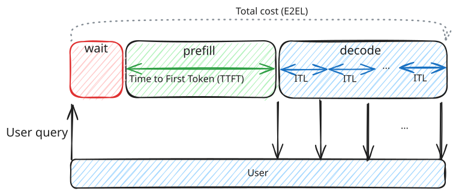
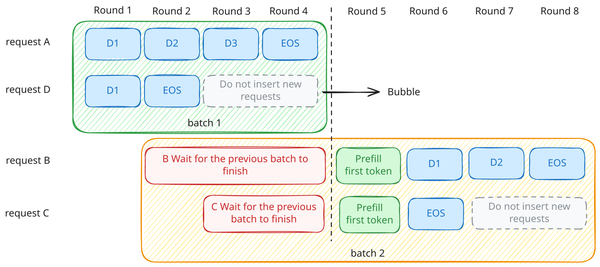
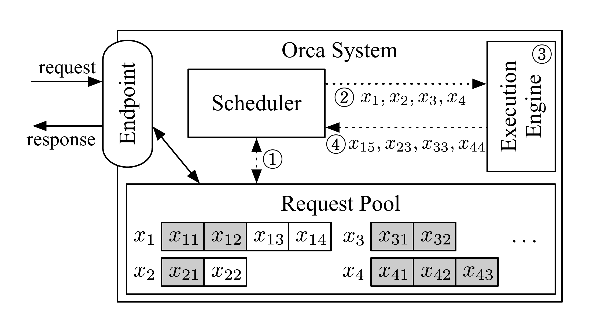
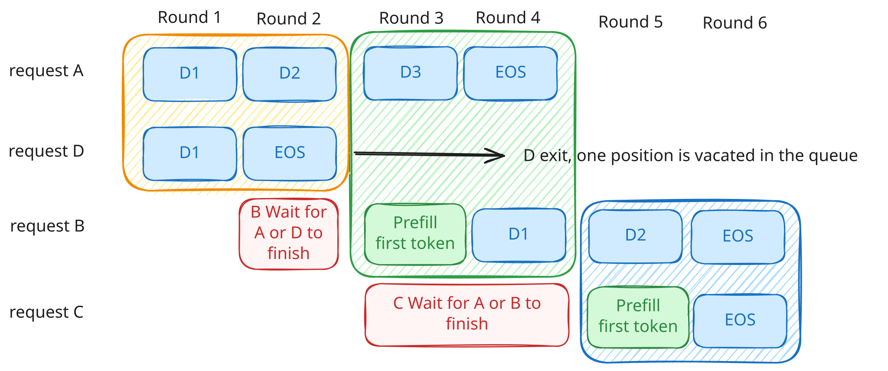
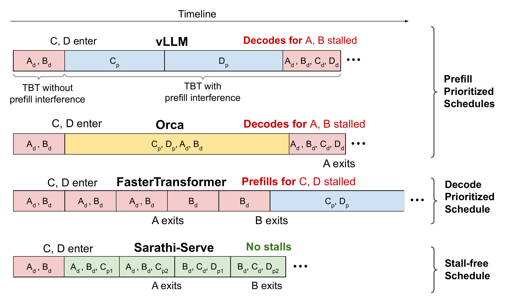
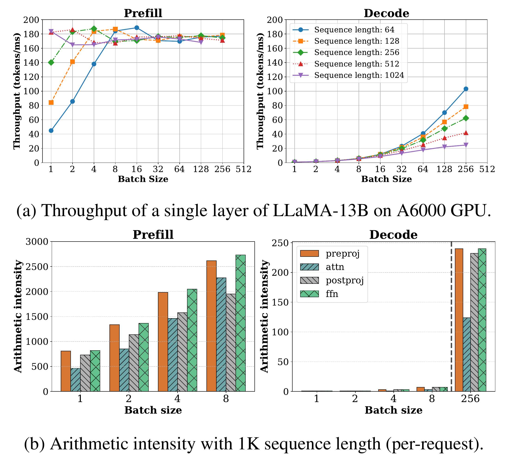
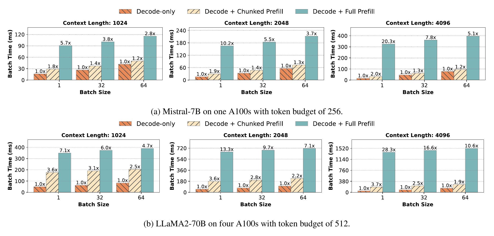

LLM 推理系统中的调度与资源管理。本文以 Orca、PagedAttention、SARATHI 和 Sarathi-Serve 几篇工作展开，讨论自回归模型在线服务中的批处理与延迟取舍。
构建LLM 在线推理服务需要同时考虑两个方面：处理新请求的输入，以及为已有请求持续生成输出。前者希望尽快分配到足够的计算资源，后者需要频繁、稳定地获得执行机会。当两类工作共享 GPU 时，优先处理新请求的长输入，可能让已有请求更晚拿到下一个 token。持续优先推进已有请求，又会延长新请求的等待。[1]
这个矛盾可以分解为两个层面的调度问题：请求何时进入批次，以及每次迭代允许它处理多少工作。 要判断这些决定对用户体验的影响，需要先了解输入处理与逐步生成各自的成本，并区分等待首个 token 与等待后续 token 所对应的延迟。
下文先介绍 LLM 推理的基本概念与性能指标，再讨论连续批处理和分块 Prefill 的调度机制。后文以 A 正在生成、长输入请求 B 和短请求 C 陆续到达为例，说明不同调度方式如何影响请求的等待。
1. 推理基础：两阶段的成本与性能指标
1.1 Prefill 与 Decode：计算和访存成本
对于常见的自回归 Transformer，Prefill（预填充） 处理提示词中的输入位置，建立各层 Attention 所需的 Key、Value 状态，通常也在这次前向计算后产生第一个输出 token。随后，Decode（解码） 使用刚生成的 token 和已经保存的kv状态，继续预测后续 token。由于自回归模型的特性，单个请求的生成存在时序依赖，不同请求的当前步骤则可以放在一起执行。[1]
KV cache 通过保存已经计算过的 Key 和 Value，避免每生成一个 token 都重新计算整段历史的这些状态。但后续 Attention 仍需读取这些状态；随着上下文变长，KV cache 占用的显存也会持续增长。[2]
以采用 GQA 的 Qwen2.5-32B-Instruct 为例，它有 64 层，每层 8 个 KV head，每个 head 的维度为 128（隐藏维度 5120 / 40 个 query head）。假设 KV cache 使用 BF16 或 FP16 存储，则每缓存一个 token：
M_KV/token = 2（Key 和 Value）× L × H_KV × d × b
= 2 × 64 × 8 × 128 × 2 = 262,144 字节
= 256 KiB
因此，一个请求缓存 8,192 个 token 时，KV 约占 2 GiB；缓存 32,768 个 token 时，约占 8 GiB。如果同时服务 32 个请求，每个都保留 8,192 个 token，且请求之间不共享缓存，仅 KV 数据就需要约 64 GiB。这里统计的是已经写入缓存的输入与生成 token；随着 Decode 推进，状态会继续累积，后续 Attention 需要读取的历史也会变长。
在上述条件下，选取一张 NVIDIA A100 80GB SXM，按照硬件峰值估算两个阶段的理论耗时。设批次大小为 1，为便于估算，按 32B 量级将参与线性计算的参数量近似为 P = 32 × 10^9，权重读取量也采用这一近似。
Prefill 的理论耗时估算：
对投影层和 FFN 等线性运算，计算量近似为 2PS。将计算量除以峰值算力，得到：[3]
T_prefill,linear ≈ 2PS / F_peak
= (2 × 32 × 10^9 × 8,192) / (312 × 10^12)
≈ 1.68 s
因果 Attention 有 S(S+1)/2 个有效位置对，若理想地跳过被遮蔽的上三角，两次矩阵乘法共需 2LH_QdS(S+1) FLOP。这里应使用 40 个 query head，KV 存储量的计算才使用 8 个 KV head。
T_prefill,attention ≈ 2LH_QdS(S+1) / F_peak
= (2 × 64 × 40 × 128 × 8,192 × 8,193)
/ (312 × 10^12)
≈ 0.14 s
T_prefill,compute ≈ T_prefill,linear + T_prefill,attention
≈ 1.68 + 0.14
≈ 1.82 s
Decode 的理论耗时估算：
已有上下文约为 8,192 token 时，单步只处理一个新位置，但这个位置仍需关注历史 KV。线性运算约需 2P FLOP，QKᵀ 与 AV 则约需 4LH_QdS FLOP：
T_decode,compute ≈ (2P + 4LH_QdS) / F_peak
= (2 × 32 × 10^9 + 4 × 64 × 40 × 128 × 8,192)
/ (312 × 10^12)
≈ 0.24 ms
但单请求 Decode 需要从显存读取约 64 GB 的权重，以及前面算出的约 2 GiB 历史 KV。假设权重和 KV 每步各从 HBM 读取一次，并达到峰值带宽，读取耗时为：
T_decode,memory ≈ (Pb + S × M_KV/token) / BW
= (32 × 10^9 × 2 + 8,192 × 262,144)
/ (2,039 × 10^9)
≈ 0.03244 s
≈ 32.4 ms
在上述理想条件下，生成 100 个输出 token 的总耗时约为 5.03 秒，其中 Prefill 约 1.82 秒，后续 99 步 Decode 约 3.21 秒（Decode 的计算时间忽略不计）。首个输出 token 由 Prefill 产生。Prefill 一次处理 8,192 个输入位置，更容易形成规模较大的矩阵计算。普通 Decode 每步每个请求只处理一个新位置，却仍需读取模型权重和历史 KV。在本例中，单步 Decode 中主要成本来自访存。这体现了长输入 Prefill 偏计算密集、单请求 Decode 偏访存密集的工作形态。
由此可见，当两阶段共享 GPU 时，这种工作形态的差异就转化为调度问题：处理新请求的整段长 Prefill，可能推迟已有请求的下一次 Decode。持续优先执行 Decode，又可能延长新请求的等待。我们后续将围绕连续批处理与分块 Prefill 的取舍展开。在比较这些机制之前，我们需要先聊聊一些常见的推理性能量化指标。
1.2 推理性能指标：延迟与吞吐量
衡量 LLM 在线推理效率，需要同时关注请求延迟和服务吞吐量：前者描述响应与生成过程中的等待，后者描述系统在单位时间内完成的工作量。[4][5]

| 指标 | 衡量的对象与观察重点 | 主要影响因素 |
|---|---|---|
| TTFT（Time to First Token） | 从请求发出到收到首个输出 token 的时间，反映开始响应的速度。 | 输入长度决定 Prefill 的工作量，模型规模、GPU 算力与算子效率影响执行时间。并发和请求到达率会改变排队等待。前缀缓存命中可减少重复输入计算。[6]客户端 TTFT 还包含分词、网络与首 token 返回开销。 |
| TPOT，（Time per Output Token） | 单个请求在首 token 之后的平均生成耗时，常用口径为 (E2EL − TTFT) / (输出 token 数 − 1)，仅适用于输出数大于 1。 |
受各步 Decode 的执行成本与累计调度等待影响。模型权重与 KV 的读取量、显存带宽、批次大小和算子效率决定单步成本。生成过程中上下文持续增长，也会改变后续步骤的耗时。 |
| ITL（Inter-Token Latency） | 相邻两个输出 token 到达客户端的时间间隔。观察流式输出时，应同时看间隔分布及 p95、p99。 | 除 Decode 本身的成本外，长 Prefill 插入、调度等待与资源竞争可能拉长某些间隔。[1]网络抖动和响应缓冲也会影响客户端观测到的节奏。 |
| E2EL（End-to-End Latency） | 从请求发出到收到最后一个输出 token 的总时间，包含首 token 前的等待与后续生成。 | 输入长度和排队影响开始回答的时间，输出 token 数与 Decode 速度决定后续生成时长，网络传输也计入总耗时。 |
| Output Token Throughput / TPS | 统计窗口内所有请求的输出 token 总数除以窗口时长，反映服务整体的生成能力。 | 并发与批次组织影响 GPU 利用率，输入／输出长度分布改变两阶段的工作量和 KV 占用。算力、显存带宽、容量与调度效率共同限制吞吐。接近饱和后，增加并发可能主要增加等待，但整机 TPS 上升也不保证单请求生成更快。 |
| Request Throughput / RPS | 统计窗口内成功完成的请求数除以窗口时长，反映服务能完成多少个请求。 | 受每个请求的输入／输出长度、请求到达率与可用服务能力影响。短请求较多时，RPS 更容易提高。 |
在 A、B、C 的例子中，A 最直接感受到的是后续 token 是否按时出现，B 和 C 首先面对的则是 TTFT。系统还希望在固定 GPU 资源内服务更多请求。
SLO（服务等级目标）进一步把体验要求变成约束，例如首 token 和生成间隔的上限，以及需要达到的满足比例。调度优化因而要回答：在约定的延迟要求下，可以把服务能力提高到什么程度？[1]
2. 连续批处理：每轮重新选择请求
2.1 Orca 的迭代级调度流程
先考虑一种简单的请求级批处理：选定一组请求后，等这一组全部完成，再接纳下一组。各请求的输出长度通常不同。即使较短的请求已经结束，空出的容量也不能及时交给新请求。如果 A 仍在生成，新到达的 B、C 就可能一直等在批次之外。[1]为说明同批请求的长短差异，我们额外加入一个短请求 D。假设每批最多接纳 2 个请求，A、D 已经完成 Prefill，分别还需要 4 次和 2 次 Decode。B 在第 2 轮前到达，C 在第 3 轮前到达。

这里限制 B、C 的，是只有整批结束后才能重新选择请求这一规则。Orca 把这个决策时机提前到每次迭代结束后：引擎执行一轮，就将结果交回调度器，由调度器重新组织下一轮的批次。[7]
orca的系统设计如下。请求经 Endpoint 进入请求池，Scheduler 从池中选择本轮批次，Execution Engine 执行一轮后将生成结果交回调度器。

请求池中的灰色格子表示输入 token，白色格子表示已有输出。图中的①—④依次展示选择请求、提交批次、执行一轮和返回结果。把这次交互连同返回后的状态处理展开，可以分成三个步骤：
- 选择下一批请求。 调度器从请求池中选出本轮要运行的请求，既可以包含尚未完成的旧请求，也可以包含等待首次执行的新请求，并将它们交给引擎。
- 执行一轮模型计算。 引擎根据各请求的阶段执行 Prefill 或 Decode，读取并更新各自的 KV，将本轮生成结果交回调度器。
- 更新状态，再次选批次。 已满足结束条件的请求退出，并通知引擎回收其 KV。未完成的请求保留进度，与新到达的请求一起参与下一轮选择。短请求因此可以先结束并返回，无须等待同批长请求。[7]
重新组批不会重新计算整个上下文。KV 由执行引擎按请求保存，跨轮复用。调度器与引擎之间交接的是本轮 token、请求标识和执行位置等信息。即使一个请求下一轮与不同的请求组成批次，它仍沿着自己的 KV 状态继续生成。[7]简易流程如下：

第 2 轮结束时，D 已完成，调度器将它移除。第 3 轮的批次就可以变为 {A, B}：A 继续推进一次 Decode，B 则处理完整输入并产生首个输出。B 不再需要等到 A 完成整个回答。
Orca 的具体策略仍按请求到达顺序选择，每批最多包含 max_bs 个请求。首次接纳请求时，还会按其最大总 token 数预留足够的 KV 槽位，避免后续生成时无处存放新增 KV。请求结束后，对应预留才能释放。因此，图中 B 能在第 3 轮进入，既需要 D 退出后留下的批次容量，也需要足够的 KV 空间。不同请求处理的 token 数和 Attention 状态长度并不相同，调度器选好请求之后，引擎还需要有效地组织这组计算。[7]
2.2 混合批次的执行与 KV cache 管理
Orca 采用选择性批处理支持这样的混合批次：狭义的 Attention 操作按请求分别执行，其他适合合并的操作则进行批处理。该设计使混合请求能在同一次迭代中推进。[7]
另一个条件是有效管理这些请求不断增长的状态。PagedAttention 将 KV cache 分块管理，减少连续大块分配、过量预留与碎片造成的浪费，并支持共享状态。vLLM 在这一机制之上构建服务系统。
两者作用在不同层次。调度器决定“这一轮运行谁”，内存管理决定“显存中能容纳哪些有效状态”。提高内存利用率可以让更多请求具备被接纳的条件，但不会自动决定它们的执行顺序。但是再灵活的准入策略也无法绕过显存容量。
到这里，A、B、C 已经在迭代边界相遇。但问题是即使它们进入了同一个批次，是否就能兼顾各自的延迟？
3. 分块 Prefill：限制每轮处理的输入量
3.1 长 Prefill 对 Decode 的干扰
当 A 正在 Decode，调度器如果优先完整处理 B 的长输入，A 就需要等待这段 Prefill。把 A 的 Decode 和 B 的 Prefill 合并到同一批次，当前轮次执行时间 会随 B 引入的计算变长（见1.1），A 则会更晚拿到下一个 token。[1]
反过来，如果一直优先已有的 Decode，等它们结束后才运行新的 Prefill，B、C 的首 token 就会被推迟。与此同时，已有请求不断退出，Decode 批次还可能越来越小，削弱批处理带来的效率。[1]
Agrawal等人用下图对比了这组取舍。vllm 和 orca 都优先让新 Prefill 加入执行：vllm 暂时不运行已有 Decode，orca 把 Decode 与完整 Prefill 混合，但较长的迭代仍会推迟输出。FasterTransformer 优先完成已有 Decode，新请求则长时间等不到 Prefill。Sarathi-Serve 把长 Prefill 拆开，与 Decode 交错安排，从而进一步限制了每轮要执行的工作量。[1]

3.2 分块 Prefill 与 Decode 的混合执行
Chunked prefill 把长输入的计算分散到多次迭代。对于因果 Attention，后续输入位置仍要使用前面位置的状态：完成一块后保留其 KV，下一块在这些状态上继续计算。切分的是执行过程，输入仍然属于同一个上下文。只有最后一块完成后，才具备产生该提示词首个输出的完整计算结果。[1][2]
这种切分为什么能与 Decode 配合？小批次 Decode 常常受访存限制，计算单元还有余量，插入适量 Prefill token，可以增加同一轮中的有效计算。Prefill 达到一定规模后，已经能够较好地利用计算资源，未必需要一次处理整段长输入才能保持效率。分块由此提供了一个调节空间：在维持计算效率的同时，限制一次迭代的时长。[1]
SARATHI 的单层实验给出了一个具体例子。Prefill 阶段最大吞吐量会受输入长度影响。一块输入只要包含足够的 token，就有可能保持较高的执行效率，继续加长输入未必能提高每 token 的处理速度。而 Decode 的吞吐量随批次增大而提高，相同批次下，较长的历史上下文会降低吞吐量。[2]
算术强度表示每读写一字节数据所进行的浮点运算量。小批次 Decode 的算术强度明显低于 Prefill，这有助于解释两阶段对计算与带宽的不同需求。[2][3]

SARATHI 研究了 chunked prefill 与 Decode 搭载的组合，并讨论了迭代工作量差异对流水线效率的影响。Sarathi-Serve 则进一步面向在线服务，用 token budget 组织批次，在吞吐与生成延迟之间进行控制。[1][2]
这里需要区分两个关键概念：生成停顿关注的是一个已开始生成的请求，为什么迟迟没有下一个 token。例如，A 正在 Decode，但是由于一些调度原因 A 的生成暂停了，明显拉长 A 的输出间隔，让用户感受到回答停住了。[1] 流水线气泡关注的是流水线中的某个执行阶段，为什么暂时没有工作可做。以两张 GPU 为例，流水线并行把模型的前半部分层放在 GPU 1，后半部分层放在 GPU 2。同一个批次必须先经过 GPU 1，再将中间结果交给 GPU 2。如果 GPU 1 正在处理一个耗时较长的批次，而 GPU 2 已完成前一个批次，又没有其他就绪工作，它就只能空等下一份中间结果。[2]
因此，分块有两种不同的作用：限制每轮 Prefill 的工作量，并持续安排 Decode，可以减少请求的生成停顿。在流水线并行中，让各批次的执行时间更接近，从而减少阶段之间的等待。[1][2]
3.3 Sarathi-Serve 的 token 预算调度
Sarathi-Serve 每轮先安排正在运行的 Decode，再安排尚未完成的 Prefill，最后才在剩余预算中接纳新请求。这里的预算统计的是本轮新处理的 token 数。在普通单 token Decode 下，每个运行中的请求先占一个预算 token。其余空间可以分配给 Prefill。[1]
继续使用 A、B、C。设每轮预算为 8，A 已在 Decode，B 有 12 个输入 token，C 有 2 个，二者都在第 1 轮决策前到达，B 排在 C 前面。再假设显存充足，三个请求在以下三轮内都不会结束。
| 轮次 | 先安排 Decode | 剩余预算安排 Prefill | 轮次结束后的状态 |
|---|---|---|---|
| 第 1 轮 | A：1 token | B：7 token | B 剩余 5 个输入 token；C 等待 |
| 第 2 轮 | A：1 token | B：5 token；C：2 token | B、C 完成 Prefill，各自产生首个输出 |
| 第 3 轮 | A、B、C：各 1 token | 无待处理 Prefill | 三者继续生成，使用 3 个预算 token |
第 1 轮不再被 B 的整段输入占据，A 每轮都有推进机会。B 通过两轮完成 Prefill，C 则在第二轮的剩余预算中加入。由此可见，分块并没有取消等待，B 需要跨轮完成输入，C 仍可能排队。它让长任务暴露出更多可以重新调度的边界，从而控制对其他请求的连续占用。
4. 块大小选择：效率与延迟的取舍
4.1 完整 Prefill 与分块 Prefill 的耗时对比
Sarathi-Serve 的 stall-free 描述的是一种调度属性：不再为了单独执行完整 Prefill，而让运行中的 Decode 长时间失去推进机会。它并不保证混合批次与纯 Decode 批次一样快。[1]

对比纯 Decode，加入分块 Prefill，加入完整 Prefill三种策略下不同上下文长度和批次大小的批次执行时间。可以看出，完整 Prefill 将批次时间提高到纯 Decode 的约 20.3 倍，分块后的对应值约为 2.0 倍。表明“限制插入的 Prefill 工作量可以显著减轻干扰”，同时也表明额外成本没有消失。[1]
4.2 块大小与 token 预算的选择依据
把块缩小，通常可以限制单轮加入的 Prefill 工作，更容易控制对 Decode 的干扰。但同一个输入需要经过更多轮，首 token 的完成时间也更容易受到跨轮排队影响。计算过于零散时，kernel 启动、调度与较低的计算利用率可能变得显著，后续块还需要访问先前的 KV。[1][2]
增大块，则可能提高 Prefill 的推进速度与执行效率，但混合批次会更重，正在 Decode 的请求更容易经历较长间隔。合适的预算取决于当前受约束的目标：严格的生成间隔要求会限制每轮可插入多少工作，较紧的首 token 目标则要求为等待中的 Prefill 保留足够服务能力。[1]
因此，预算选择应在固定模型、硬件与请求轨迹下比较 TTFT 和生成间隔分布，同时观察吞吐量。还需要改变输入输出长度与到达强度，检查长输入、突发流量和持续 Decode 占用下的表现。低负载下合适的配置，不一定能在过载边缘维持同样的延迟。[5]
5. 机制总结：请求调度、KV 管理与分块执行
把上述过程放在一起，连续批处理、KV 分块管理和分块 Prefill 分别改变了不同的约束。
| 机制 | 增加的控制能力 | 仍然存在的限制 |
|---|---|---|
| 迭代级／连续批处理 | 在迭代边界接纳、移除请求 | 长迭代仍会影响批次中的其他请求 |
| PagedAttention 等 KV 分块管理 | 更有效地利用显存容量、组织共享状态 | 状态仍有访问成本，调度顺序仍需单独决定 |
| 分块 Prefill 与混合批次 | 控制每轮插入的输入工作，让 Decode 持续推进 | 块大小、首 token 等待与计算效率之间仍有取舍 |
这也回答了开头的 A、B、C 问题。先让 B、C 能在迭代边界加入，再给它们的 Prefill 设置每轮工作量，才能同时处理“有没有机会运行”和“运行一次影响别人多久”。容量管理则决定这一安排能否在显存中成立。
这些机制仍然把两阶段放在同一组执行资源上。即使每轮调度已经足够细，Prefill 与 Decode 仍需共享硬件和并行配置。当这种配置上的耦合成为主要限制时，下一步就是独立部署两阶段。问题也随之从“这一轮让谁运行”扩展为“请求送到哪里、两边各分多少资源，以及中间状态如何交接”。[10]
推荐相关阅读：第二篇（尚未发布）。
参考文献
- Amey Agrawal et al. Taming Throughput-Latency Tradeoff in LLM Inference with Sarathi-Serve. OSDI 2024, pp. ↩
- Amey Agrawal et al. SARATHI: Efficient LLM Inference by Piggybacking Decodes with Chunked Prefills. arXiv:2308.16369v1, 2023. ↩
- NVIDIA. GPU Performance Background User's Guide. ↩
- NVIDIA. NIM LLMs Benchmarking: Metrics. ↩
- Vinh Nguyen et al. LLM Inference Benchmarking: Fundamental Concepts. NVIDIA Technical Blog, 2025-04-02. ↩
- vLLM contributors. Automatic Prefix Caching. stable documentation. ↩
- Gyeong-In Yu et al. Orca: A Distributed Serving System for Transformer-Based Generative Models. OSDI 2022, pp. 521–538. ↩
- vLLM contributors. Performance and Tuning: Chunked Prefill. v0.5.2 documentation. ↩
- vLLM contributors. Optimization and Tuning: Chunked Prefill. V1 / stable documentation. ↩
- Yinmin Zhong et al. DistServe: Disaggregating Prefill and Decoding for Goodput-optimized Large Language Model Serving. OSDI 2024, pp. ↩